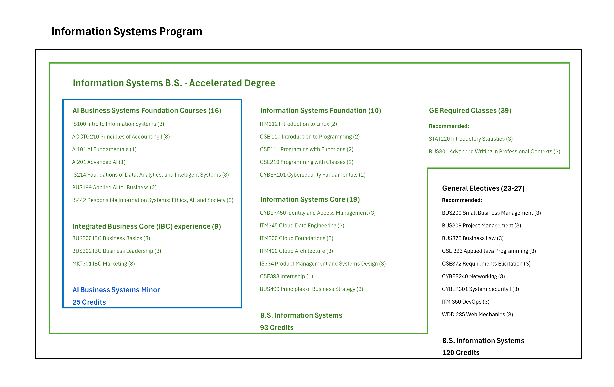

Accelerated pathway
Information Systems B.S. — Accelerated Degree
This path is designed for students who want the same Information Systems degree courses in less time: 93 credits instead of the traditional 120 credits.

Accelerated pathway
This path is designed for students who want the same Information Systems degree courses in less time: 93 credits instead of the traditional 120 credits.
